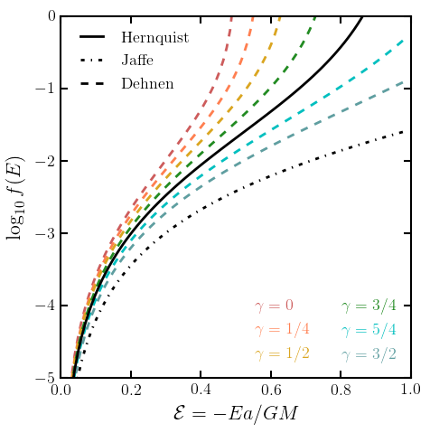
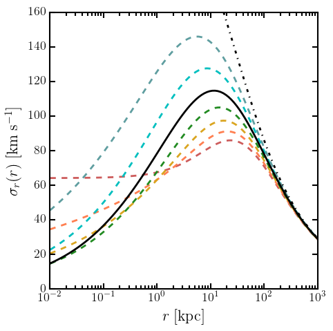
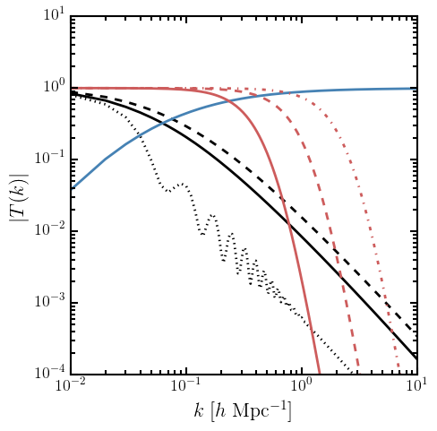
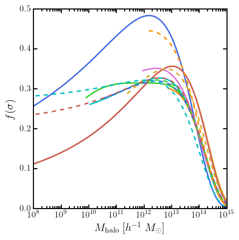
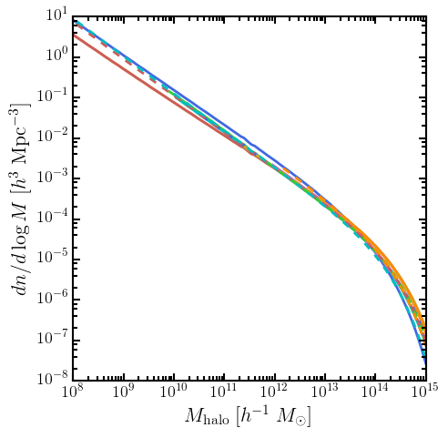

Usage: These a toolkits I've written that are used throughout my work. There are better toolkits out in the public, but I wrote these for the worth while experience --- I invite you to develop your own.
Whatever repositories that I have public will be located in my [Bitbucket].
N-body Initial Conditions Generator
Generating the particle representation of potential-density profiles are a necessary starting component in several studies of N-body (gravitational) simulations. This code can generate realizations for a Hernquist model
(Hernquist 1990)
for a Jaffe model
(Jaffe 1983),
and for the Dehnen power law family
(Dehnen 1993; which also produces a Hernquist and Moore profile)
by sampling from their distribution functions when treating them as collisionless systems. As of now, only isotropic profiles are computable. In reality however, we cannot have nice things like halos with complete isotropy.


Halo Mass Function Toolkit
Mass functions are an important tool in quantifying the halo abundance in cosmic structure formation. I use a object-orientated toolkit that generates mass functions for a catalog of fitted multiplicity functions
(Press & Schechter 1974,
Sheth & Tormen 1999,
Jenkins et al. 2001,
etc.)
utilizing Press-Schechter formalism. Implemented are the best fit parameters of various flat LCDM measurements (with relativistic species), the effects of baryonic acoustic oscillations
(Eisenstein & Hu 1997),
optional WDM parametrization
(Bode et al 2001),
and scripts to produce HMFs from generated halo catalogs.


